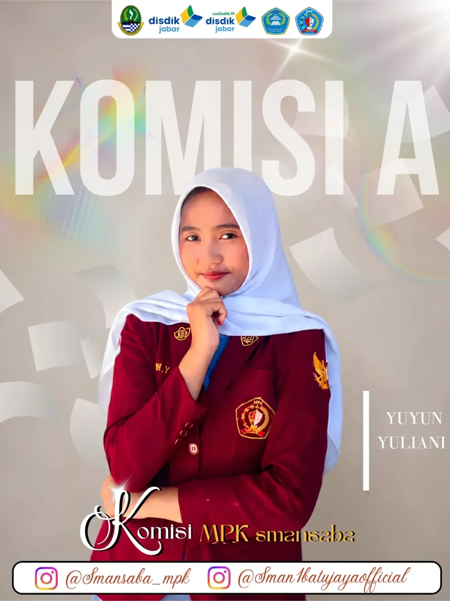
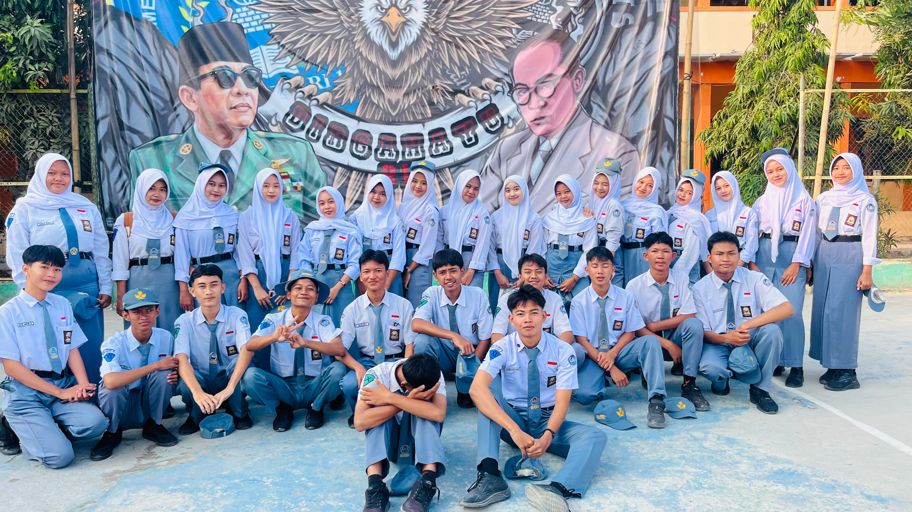

🗣️
01KANIRA
MPK Berani Berbicara
Forum pengembangan kemampuan anggota MPK dalam berbicara, berdiskusi, berpikir kritis, dan menyampaikan aspirasi dengan percaya diri.
Lihat halaman KANIRA →Website YUYUN YULIANI sebagai Ketua MPK terpilih SMAN 1 Batujaya. Kenali visi, misi, program kerja, dan gagasan yang dibawa.
Setiap gagasan dimulai dari mendengar, lalu diwujudkan menjadi aksi.
Pilih salah satu untuk membuka halaman penjelasan lengkap.
Forum pengembangan kemampuan anggota MPK dalam berbicara, berdiskusi, berpikir kritis, dan menyampaikan aspirasi dengan percaya diri.
Lihat halaman KANIRA →Ruang pertukaran wawasan antara MPK SMAN 1 Batujaya dengan MPK sekolah lain melalui diskusi dan berbagi pengalaman organisasi.
Lihat halaman NARASI →Program penghargaan bagi anggota MPK yang aktif mengikuti kumpulan dan berkontribusi dalam kegiatan organisasi.
Lihat halaman APREKA →Wadah penyampaian kritik, saran, dan aspirasi siswa melalui mading sekolah maupun media online.
Lihat halaman RONAWICARA →KANIRA membantu membangun keberanian berbicara, berdiskusi, dan menyampaikan gagasan.
NARASI membuka ruang belajar dari pengalaman dan sistem kerja organisasi lain.
APREKA memberi ruang penghargaan terhadap keaktifan dan kontribusi anggota MPK.
RONAWICARA menyediakan jalur penyampaian aspirasi siswa secara langsung maupun online.

Ruang khusus untuk memperkenalkan Ketua MPK terpilih dan gagasan yang akan dibawa dalam menjalankan amanah.
Setiap langkah punya prosesnya sendiri. Setelah terpilih, amanah ini menjadi kesempatan untuk menerapkan gagasan, belajar memimpin, dan bertanggung jawab bersama seluruh anggota MPK.
Saya ingin menjalankan amanah ini dengan lebih berani, terbuka terhadap masukan, dan mampu bekerja sama dengan seluruh anggota MPK. Terpilih bukan menjadi akhir dari proses, tetapi awal untuk menjalankan tanggung jawab.
01 — Mau Mendengar
Terbuka terhadap pendapat, kritik, saran, dan aspirasi dari anggota maupun siswa.
02 — Bertanggung Jawab
Menjalankan amanah dan tugas dengan sungguh-sungguh serta berusaha menyelesaikan apa yang sudah dimulai.
03 — Terus Belajar dan Berkembang
Berani mencoba hal baru, menerima evaluasi, dan terus mengembangkan kemampuan diri.
04 — Bergerak Bersama
Membangun komunikasi dan kerja sama yang baik dengan seluruh anggota MPK untuk mencapai tujuan bersama.
Landasan MPK SMAN 1 Batujaya dalam menjalankan fungsi perwakilan siswa, pengawasan terhadap OSIS, komunikasi, dan pengelolaan aspirasi.
Mengoptimalkan peran dan kinerja MPK SMAN 1 Batujaya sebagai wadah aspirasi siswa yang aktif dan terbuka serta memperkuat fungsi pengawasan terhadap OSIS melalui penyampaian kritik dan saran yang konstruktif.
MPK Berani Berbicara merupakan forum pengembangan kemampuan anggota MPK dalam berbicara, berdiskusi, dan menyampaikan pendapat secara jelas serta percaya diri.
KANIRA adalah forum yang berfokus pada pengembangan kemampuan komunikasi dan penyampaian pendapat anggota MPK. Kegiatan diarahkan agar anggota terbiasa berbicara dengan jelas, berdiskusi, menyampaikan kritik dan saran, serta menyampaikan aspirasi dengan percaya diri dalam menjalankan tugas organisasi.
Dalam menjalankan fungsi organisasi, anggota MPK perlu mampu menyampaikan gagasan dan aspirasi secara terarah. Karena itu, KANIRA menjadi ruang latihan agar kemampuan berbicara, berdiskusi, berpikir kritis, dan menyampaikan pendapat dapat terus dikembangkan.
Anggota MPK memiliki keberanian dan kemampuan yang lebih baik dalam berbicara, berdiskusi, menyusun pendapat, serta menyampaikan kritik, saran, dan aspirasi secara jelas dan bertanggung jawab.
Antar Organisasi merupakan kegiatan pertukaran wawasan antara MPK SMAN 1 Batujaya dengan MPK dari sekolah lain melalui diskusi dan berbagi pengalaman mengenai pelaksanaan organisasi.
NARASI adalah wadah pertukaran wawasan antarorganisasi yang mempertemukan MPK SMAN 1 Batujaya dengan MPK dari sekolah lain. Melalui diskusi dan berbagi pengalaman, masing-masing organisasi dapat mengenal perbedaan sistem kerja, program, serta cara menjalankan fungsi MPK.
Setiap sekolah dapat memiliki sistem kerja dan pengalaman organisasi yang berbeda. Perbedaan tersebut dapat menjadi bahan pembelajaran untuk melihat berbagai cara menjalankan organisasi dan mengembangkan program kerja.
MPK memperoleh tambahan wawasan mengenai sistem kerja dan pengalaman organisasi lain yang dapat menjadi bahan pembelajaran, evaluasi, serta pengembangan program kerja.
Apresiasi Anggota MPK merupakan kegiatan pemberian apresiasi kepada anggota MPK yang aktif mengikuti kumpulan dan berkontribusi dalam kegiatan organisasi.
APREKA merupakan program apresiasi yang memberikan penghargaan terhadap keaktifan anggota MPK dalam mengikuti kumpulan dan berkontribusi pada kegiatan organisasi. Keaktifan dicatat melalui mading keaktifan dan stiker bintang sebagai bentuk pencatatan partisipasi.
Kontribusi anggota dalam organisasi perlu mendapat perhatian dan apresiasi. Dengan adanya pencatatan keaktifan, partisipasi anggota dapat terlihat dan menjadi bagian dari evaluasi serta penghargaan pada akhir semester.
Terbangunnya budaya keaktifan dan partisipasi dalam MPK melalui sistem pencatatan dan apresiasi yang membuat kontribusi anggota lebih terlihat dan dihargai.
Ruang aspirasi siswa melalui sticky note pada mading yang disediakan, sekaligus melalui media online agar siswa dapat menyampaikan kritik, saran, dan aspirasi dengan lebih mudah.
Ronawicara merupakan wadah penyampaian aspirasi siswa melalui sticky note yang ditempelkan pada mading yang telah disediakan. Siswa dapat menyampaikan kritik, saran, maupun aspirasi secara langsung melalui media tersebut.
Selain mading sekolah, Ronawicara dapat dimanfaatkan melalui website agar siswa memiliki alternatif untuk menyampaikan aspirasi secara online. Dengan begitu, penyampaian aspirasi tidak terbatas pada kehadiran siswa di depan mading.
Tulis aspirasi pada sticky note yang tersedia, lalu tempelkan pada mading Ronawicara yang telah disediakan di sekolah.
Tidak sempat ke mading? Aspirasi juga dapat dikirim secara online melalui website Ronawicara.
Jangan hanya disimpan atau dibicarakan. Sampaikan melalui Ronawicara. Kamu bisa menggunakan mading sekolah atau mengirim aspirasi melalui internet.
🌐 Kirim Aspirasi Online →Aspirasi yang masuk akan dikumpulkan dan disampaikan kepada pihak terkait untuk ditindaklanjuti sesuai dengan kewenangan. Tindak lanjut tidak selalu berarti setiap usulan dapat langsung direalisasikan.
Dukungan penuh dari keluarga besar kelas XI.02 untuk Yuyun Yuliani sebagai Ketua MPK terpilih.
Sebuah bentuk dukungan dan semangat dari teman-teman kelas XI.02 untuk Yuyun setelah terpilih sebagai Ketua MPK.

Untukmu, kami percaya bahwa keberanian untuk mencoba, kemauan untuk mendengar, dan semangat untuk berkembang adalah modal penting dalam memimpin. Karena itu, kami akan terus memberikan dukungan untuk Yuyun Yuliani dalam menjalankan amanahnya sebagai Ketua MPK.
Tidak semua dukungan lahir dari tepuk tangan yang paling keras.
Kadang ia tumbuh dari kebiasaan sederhana: mendengar ketika orang lain berbicara, tetap tinggal ketika keadaan tidak mudah, dan terus melangkah bahkan saat tidak ada yang melihat.
Karena itulah, ketika nama Yuyun berdiri di antara banyak kemungkinan, ada banyak hati yang memilih untuk menitipkan harapan.
Rizki melihat keberanian yang tidak selalu perlu ditunjukkan dengan suara tinggi.
Wilda melihat seseorang yang mampu berjalan tanpa harus mendahului siapa pun.
Mutia melihat ketulusan yang tidak sibuk meminta pengakuan.
Salma melihat langkah kecil yang tetap bergerak meski jalan belum jelas.
Farid melihat tekad yang tidak mudah berpaling ketika diberi tanggung jawab.
Agim melihat semangat yang terus tumbuh dari proses, bukan dari pujian.
Citra melihat kehangatan yang membuat orang lain merasa memiliki tempat.
Nurul melihat ketenangan yang membuat banyak hal terasa lebih ringan.
Haekal melihat keberanian untuk mencoba, bahkan ketika hasilnya belum pasti.
Alinda melihat seseorang yang memilih belajar daripada merasa paling tahu.
Mikaila melihat harapan yang tumbuh tanpa perlu banyak janji.
Diana melihat kesungguhan yang tidak dibuat-buat.
Karisa melihat niat baik yang berjalan beriringan dengan usaha.
Silvia melihat cahaya kecil yang tetap bertahan di tengah keraguan.
Padillah melihat seseorang yang mau mendengar sebelum berbicara.
Dika melihat langkah yang tidak berhenti hanya karena takut gagal.
Syari melihat keyakinan yang tumbuh dari kerja keras.
Aeinun melihat ketulusan yang tidak mencari sorotan.
Azam melihat semangat yang selalu menemukan alasan untuk bangkit.
Reni melihat kepedulian yang hadir tanpa diminta.
Ayu Shifa melihat keberanian yang tetap lembut.
Syarif melihat komitmen yang tidak berubah karena keadaan.
Lisma melihat mimpi yang dijaga dengan kesabaran.
Dafa melihat seseorang yang memilih bertumbuh setiap hari.
Ridwan melihat tekad yang tidak mudah goyah.
Arumii melihat sosok yang mampu merangkul perbedaan.
Wita melihat harapan yang selalu menemukan jalannya.
Keyla melihat senyum yang mampu menenangkan banyak kegelisahan.
Fitra melihat seseorang yang tidak takut memulai dari nol.
Juan melihat semangat yang menular tanpa disadari.
Ima melihat kebaikan yang hadir dalam hal-hal sederhana.
Nazma melihat keberanian yang tidak perlu diumumkan.
Vira melihat keteguhan yang tetap berdiri ketika banyak orang ragu.
Bibah melihat seseorang yang percaya bahwa setiap suara layak didengar.
Hafiz melihat langkah yang terus bergerak menuju versi terbaik dirinya.
Regina melihat harapan yang tidak hanya dipikirkan, tetapi juga diperjuangkan.
Okly melihat sosok yang tidak berhenti belajar dari setiap proses.
Aldo melihat seseorang yang memahami bahwa kepemimpinan bukan tentang berada di depan, melainkan tentang membawa orang lain berjalan bersama.
Dan ketika semua suara itu berkumpul, mereka berubah menjadi sebuah keyakinan.
Bahwa menjadi pemimpin bukan tentang menjadi yang paling sempurna, melainkan tentang memiliki keberanian untuk mendengar, kerendahan hati untuk belajar, dan keteguhan untuk terus melangkah.
Hari ini kami tidak hanya melihat seorang ketua terpilih. Kami melihat seorang teman yang berani mengambil amanah dan melangkah lebih jauh daripada kemarin.
Untuk itu, kami berdiri di sini. Bersama. Untuk Yuyun.